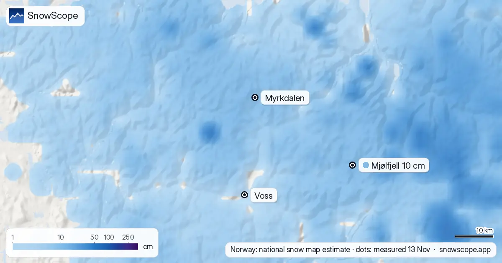
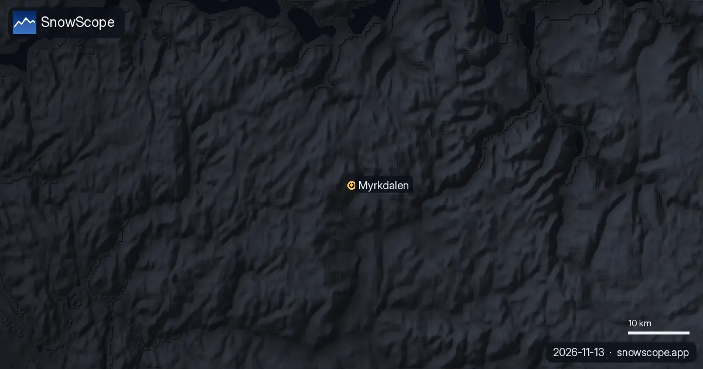

Snødybde i Myrkdalen: rundt 14 cm i bakkene, Vestlandets største uke i vente (14. november 2026)
Myrkdalen, nord for Voss, starter høyere enn naboen, og det lønner seg. Norges nasjonale snøkart anslår rundt 14 cm på bakken mellom omtrent 800 og 1 000 m, rundt 9 cm lenger ned nær bygda, og rundt 33 cm på høyfjellet på 1 333 m. I dalbunnen lenger ned er det nesten ingenting. Dette er anslag; nærmeste målestasjon, Mjølfjell på 695 m og 32 km unna, hadde 10 cm 13. november.
Se snøprognosen for Myrkdalen direkte i SnowScope-appenSnødybde, puddervarsler og 3D-kartet, gratis.
Uka som kommer er den store
Vi venter rundt 44 cm på toppen (1 067 m) de neste sju dagene, 27 cm midt i fjellet (756 m) og rundt 7 cm i bunnen (446 m). Det meste kommer de to første dagene: rundt 28 cm på toppen.
Andre prognoser er enda høyere på toppen, fra 57 til 108 cm, så vårt tall er det forsiktige. I bunnen kommer omtrent halvparten av nedbøren som regn i disse prognosene, med snøgrensen nær 580 m. Det setter de nederste heisene rett på grensen, og den øvre halvdelen av anlegget godt inne i snøen.

Hvor det står mot det normale
I våre 46 tidligere vintrer er vanlig snødybde 14. november 59 cm på toppen, 51 cm midt i fjellet og 40 cm i bunnen. Myrkdalen ligger altså godt etter i dag. Men stedet har også for vane å ta igjen raskt: innen 30. november er vanlig snødybde på toppen 93 cm, innen 15. desember 120 cm.
En middels vinter topper seg på rundt 319 cm på toppen, og bakken der holder seg hvit i omtrent 265 dager. Forrige vinter toppet seg på 227 cm.
Trenden bak tallene
De første 15 vintrene i våre tall hadde en største snødybde på 362 cm på toppen i en middels vinter; de siste 15 hadde 282 cm. Snødagene falt fra 287 til 248. Myrkdalen er fortsatt et av de snørikeste skianleggene i Sør-Norge, bare ikke like ekstremt som i de første vintrene i våre tall.
Er Myrkdalen åpent?
Ikke ennå. Den offisielle sesongen varer fra 27. november 2026 til 25. april 2027, med åpent hver dag, og hovednedfarten ned til bygda har snøproduksjon hele veien.
Tips til skiløpere
- Opptil en meter nysnø på et tynt underlag: les snøskredvarselet før du kjører noe bratt utenfor preparert løype.
- Veien opp fra Vossestrand kan være våt i bunnen og snødekt på toppen samme dag.
- Sjekk skisenterets egen heisstatus: i kraftig snøfall med vind kan de øverste heisene stoppe.
Flere kart (eksterne nettsteder)
Referanser og kilder
- seNorge, Norges nasjonale snøkart (NVE og Meteorologisk institutt), åpne data under NLOD-lisensen www.senorge.no/
- Myrkdalen, offisiell side: åpningsdatoer og heisstatus, lest 2026-11-13 www.norwaysbest.com/no/myrkdalen/skisenter/apningstider-og-loypekart
- Varsom, snøskredvarsler for Norge www.varsom.no/
- Meteorologisk institutt, stasjonsobservasjoner (CC BY 4.0), daglige rapporter slik de publiseres av Ogimet www.ogimet.com/
Om tallene
Målt snø: morgenmålinger 13. november 2026 ved de offisielle værstasjonene i Sverige (SMHI åpne data), Finland (FMI åpne data, CC BY 4.0) og Norge (MET Norways stasjonsrapporter, CC BY 4.0, publisert av Ogimet). Norges nasjonale snøkart seNorge (NVE og MET Norway, NLOD) gir anslagene på et rutenett på 1 km for bakkene. Våre tall: SnowScopes prognose for de neste sju dagene i tre høyder i skisenteret, sammenlignet med uavhengige prognoser (ECMWF, ICON, GFS, GEM) for 14. til 20. november; snøhistorikk for 46 tidligere vintre (1980-81 til 2025-26), en modell av fortiden korrigert for høyde. Åpningsdatoer: skisentrenes egne sider, lest 13. november 2026. Løypelengde og antall heiser: kartlegging i OpenSkiMap.
Offisielle snøskredvarsler: Varsom (NVE)
Siter denne rapporten
For forskning, undervisning eller presse: tallene og diagrammene kan brukes fritt under CC BY 4.0 med denne kildehenvisningen.
SnowScope (2026), Snødybde i Myrkdalen: rundt 14 cm i bakkene, Vestlandets største uke i vente (14. november 2026), https://snowscope.app/blog/nb/2026/11/myrkdalen-snow-depth-14-november-2026.html, hentet 2026-11-14
SnowScope (Atlas Labs). (2026, November 14). Snødybde i Myrkdalen: rundt 14 cm i bakkene, Vestlandets største uke i vente (14. november 2026). SnowScope snow reports. https://snowscope.app/blog/nb/2026/11/myrkdalen-snow-depth-14-november-2026.html
BibTeX
@misc{snowscope2026myrkdalensnowdepth14nove,
author = {{SnowScope (Atlas Labs)}},
title = {Snødybde i Myrkdalen: rundt 14 cm i bakkene, Vestlandets største uke i vente (14. november 2026)},
year = {2026},
month = nov,
howpublished = {\url{https://snowscope.app/blog/nb/2026/11/myrkdalen-snow-depth-14-november-2026.html}},
note = {Published 2026-11-14 17:59 UTC; accessed 2026-11-14}
}· CC BY 4.0 · Metoder, data og verktøy →
Myrkdalen: snø og temperatur etter høyde, i vinter sammenlignet med i fjor (verktøy) →
Følg Myrkdalen
Gratis: en melding når nysnø er på vei, og prognosen hver morgen.
Flere snørapporter

Husky og hund i Rovaniemi vinteren 2026-27: værstasjonene målte 7 til 8 cm 13. november, byens første skiløype åpnet, tre huskygårder med datoer og priser, dagslys og hunderegler.

Hundekjøring på Røros vinteren 2026-27: rundt 5 til 6 cm snø ifølge Norges nasjonale snøkart, hundegårder med priser, Femundløpet i februar 2027 og regler for egen hund nær tamrein.

Hundekjøring i Kiruna vinteren 2026-27: værstasjonen målte 0 cm snø 13. november, arrangører med sesong og priser, korte dager og regler for egen hund i skiløyper, reinbeiteland og Abisko.